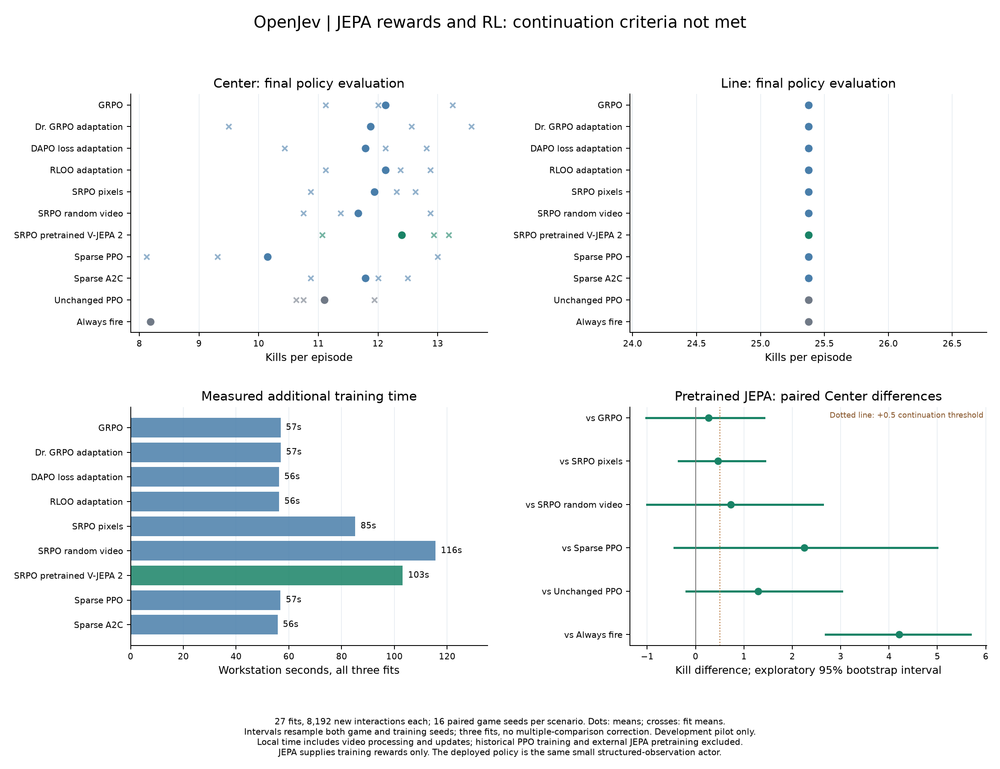
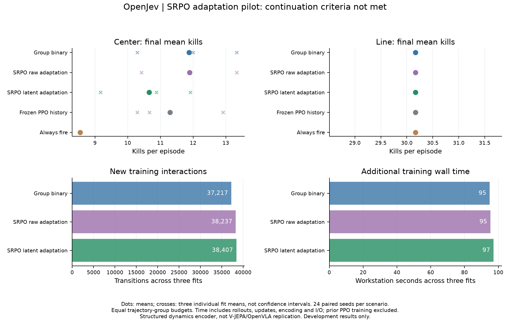
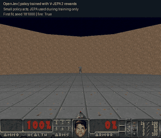
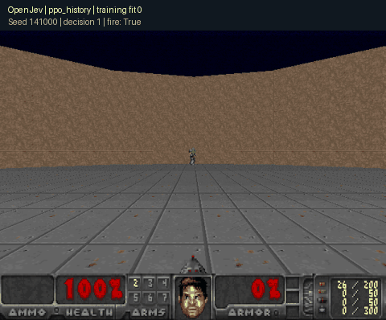
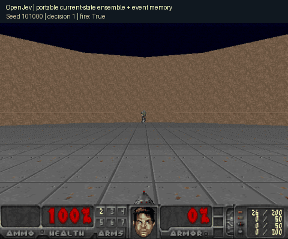
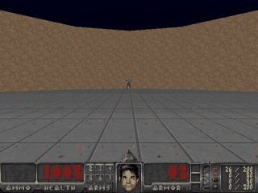

Give a small local model context, a question, and candidate answers. Inspect every score.
Qwen3 0.6B · 4-bit · WebGPU
About 350 MB of model weights on first use; allow about 1.5 GB of GPU memory. Downloads start only when you load the model.
No model loaded. Your inputs are processed in a local browser worker; model and runtime files come from public hosts.
Define a decision
Two to eight choices. Include an “insufficient information” option yourself if useful.
Candidate probabilities
Load the model and score a decision. All candidate scores will appear here.
Scores are relative to your supplied choices. They are uncalibrated and do not establish correctness or success. A small model may misunderstand your instruction.
The worker reads first-position candidate logits, then samples and discards one token. No explanation is generated. Timing includes tokenization, a model step, GPU-to-CPU readout, and scoring; first use can include compilation. Inputs are not saved by this app. Export is optional.
TRAINED LOCAL CHESS MODEL
A 44k-parameter recurrent model plays chess
Our spatial reference model scores legal moves without search. Across three fits, it matched Stockfish on 32.97% of ordinary development positions versus 25.61% for a material heuristic. Future-board prediction did not beat the matched spatial controls.
Recorded local inference. Twelve spatial reference models, all released. The first scheduled game was a draw; each model variant finished the four-game exhibition with one win and three draws. No Elo or novelty claim.
MEASURED, NOT ASSUMED
Reinforcement learning improves Center combat
Nine PPO/DQN fits trained on 294,912 game interactions. In fresh confirmation, PPO with history averaged 11.56 kills in Center versus 6.38 for event-memory rules, and passed the predeclared combat gate. It also beat the always-fire control in Center. On Line, it matched always-fire exactly, so that result does not establish learned memory. These are established algorithms, not a new RL method.
Earlier command-utility gates remain failed. The old metric can miss delayed hits during wait commands; this new study evaluates kills and duration. The browser language model remains separate from the numerical Doom controllers.
LATEST EXPERIMENT
JEPA rewards and RL: continuation criteria not met
Twenty-seven fits, 221,184 new interactions and 992 evaluation episodes. Pretrained V-JEPA 2 rewards produced 12.40 mean Center kills, versus 12.12 for GRPO, 10.15 for sparse PPO and 11.10 for unchanged PPO. The comparison also includes Dr. GRPO, a DAPO loss adaptation, RLOO, A2C, pixel similarity and a random video encoder.

Actual pretrained V-JEPA 2 is used only for training rewards. The action policy remains small. Equal additional interactions, different compute and update counts; external pretraining cost excluded. Three fits and 16 seeds per scenario, development results only.
Nine small-model fits used 113,861 new training interactions and 624 evaluation episodes. Latent self-reference averaged 10.65 Center kills, versus 11.88 for binary rewards, 11.89 for raw similarity and 11.29 for unchanged PPO. All averaged 30.17 on Line. This pilot did not establish a benefit and stopped without further tuning.

A structured-observation adaptation with a small dynamics encoder. It does not reproduce V-JEPA or OpenVLA, and the wide intervals do not establish that SRPO is worse generally. Three training fits; equal episode-group budgets, differing interactions and compute.
These are recorded episodes, not a live browser Doom engine. These controllers consume structured game observations rather than pixels.

Policy trained with JEPA rewards
First fit, first evaluation seed 181000: 13 kills in 19.26 game seconds. JEPA was used to score training clips; the small policy acts during this recording. Replay matches the preserved outcome. Recording receipt

PPO with causal history
First confirmation seed 141000, first training fit: 11 kills in 25.09 game seconds, then death. Replay matches the preserved evaluation. A small RL firing controller with rule steering, separate from Qwen. Recording receipt

Fitted ensemble + event memory
First confirmation seed 101000: 6 kills, 9.20 game seconds, then death. Replay matches the preserved evaluation. Four-feature numerical heads, not the Qwen language model. Recording receipt

Local language controller
Qwen3-4B on Apple Silicon. 2 kills, 8.17 game seconds; 20.61 wall seconds. Playback is at game speed. A single development demonstration.
Tiny imitation baseline
A separate 5,253-parameter model: 16 kills in 23.1 game seconds. Trained to imitate a rule controller; it does not interpret arbitrary English.